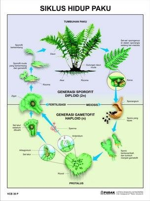

Jurnal Pertumbuhan Tanaman
- Lacak, abadikan, dan kenang setiap tahap pertumbuhan tanamanmu.
Merawat tanaman bukan hanya soal menyiram dan memberi pupuk — tapi juga tentang melihat mereka tumbuh dan berkembang dari hari ke hari. Fitur Jurnal Pertumbuhan di Plants App memungkinkan kamu untuk mendokumentasikan setiap momen penting dalam perjalanan tanamanmu secara digital, praktis, dan terorganisir.
- Mengunggah Foto Berkala:
Abadikan tanamanmu dari berbagai sudut dan dalam berbagai tahap pertumbuhan. Kamu bisa mengunggah foto harian, mingguan, atau sesuai keinginan, sehingga kamu benar-benar bisa melihat perkembangan nyata dari hari ke hari — mulai dari tunas kecil pertama, munculnya daun baru, hingga bunga yang mulai mekar.
- Mencatat Perubahan & Aktivitas Perawatan:
Setiap foto bisa dilengkapi dengan catatan atau deskripsi. Misalnya, kamu bisa menuliskan:
"Hari ke-5 setelah ditanam, daun pertama mulai muncul."
"Hari ini tanaman disiram dan diberi pupuk cair."
"Pindah ke pot yang lebih besar karena akar sudah mulai penuh."
Ini sangat membantu untuk mengevaluasi apa yang berhasil dan apa yang perlu diperbaiki, terutama jika kamu merawat banyak jenis tanaman sekaligus.
- Pantau Pola Pertumbuhan Secara Visual:
Dengan sistem pelacakan yang terintegrasi, kamu bisa melihat garis waktu pertumbuhan tanamanmu secara kronologis. Grafik dan tampilan visual akan memudahkanmu untuk mengenali pola pertumbuhan, melihat perubahan ukuran, warna, atau bentuk dari waktu ke waktu.
- Pengingat & Notifikasi Jurnal:
Jangan khawatir lupa mencatat. Plants App akan memberikan pengingat rutin untuk meng-update jurnal tanamanmu. Kamu bisa atur sendiri frekuensinya, misalnya setiap 3 hari, seminggu sekali, atau setiap kali ada tindakan perawatan seperti pemangkasan, pemupukan, atau pemindahan media tanam.